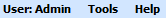
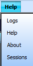

#Run Navigate the Main menu #This script assume that the Java GUI is already running. #inputs: menuName menuSubName # menuName = User:Admin, Tools, Help # menuSubName = # User:Admin->Permissions, Preferences, Logout # Tools->Licenses, Reboot, Refresh # Help->Logs, Help, About, Sessions #Usage: nav_menu.sikuli menuName=[] menuSubName=[] ############################################################### #common code for every sikuli code. Do not remove this section from me7klib import * ############################################################### #YOUR code start here ############################################################### #This is your check for the inputs that you are expecting. def Check_args(): #checking for required arguments Check_arg('menuName') Check_arg('menuSubName') Check_args() ############################################################ #Main program definitions code start from this point #Any global variables here #Any definitions are here def Nav_MainMenu(): Main_gui(2) if find(): #found main menu my_menu = Get_arg('menuName') my_submenu = Get_arg('menuSubName') #This is for User:Admin menu if my_menu == 'User\:Admin': click(Pattern().targetOffset(-51,0)) #This is for Tools menu elif my_menu == 'Tools': click(Pattern().targetOffset(18,-1)) #This is for Help menu elif my_menu == 'Help': click(Pattern().targetOffset(65,-1)); sleep(1) wait() if my_submenu == 'Logs': click(Pattern().targetOffset(-8,-25)); sleep(1) elif my_submenu == 'Help': click(Pattern().targetOffset(-8,0)); sleep(1) elif my_submenu == 'About': click(Pattern().targetOffset(-4,25)); sleep(1) elif my_submenu == 'Sessions': click(Pattern().targetOffset(-1,51)); sleep(1) else: Print_text('Wrong submenu: ' + my_submenu) else: Print_text('Wong menu: ' + my_menu) #wrong menu name else: Print_text('Failed to look for main menu.') ####################################################### #Main program flow Nav_MainMenu()